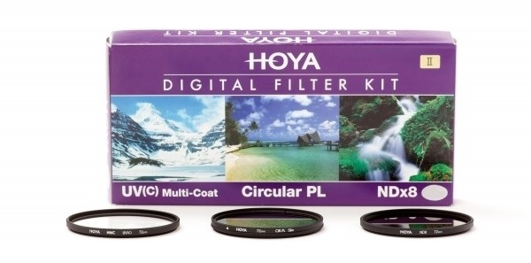

Очень часто люди задают вопросы "На какой фотоаппарат ты снимаешь?" или "А какой у тебя объектив?". И не всегда хватает только названия. Зачастую многие хотят еще и узнать какими характеристиками обладает та или иная аппаратура. Поэтому я решила рассмотерть в данной статье всю свою фотехнику и привести технические характеристики.
Фотоаппарат Canon 600D
Canon EOS 600D — отличная любительская цифрозеркальная камера, она очень удобна в управлении, а усовершенствованные автоматические программы съемки могут практически полностью выполнить все задачи фотографа за него.
Ниже приведена таблица с характеристиками данной камеры:
| Матрица | ||
| Общее число пикселов | 18.7 млн | |
| Число эффективных пикселов | 18 млн | |
| Размер | APS-C (22.3 х 14.9 мм)) | |
| Кроп-фактор | 1.6 | |
| Максимальное разрешение | 5184 x 3456 | |
| Тип матрицы | CMOS | |
| Чувствительность | 100 - 3200 ISO, Auto ISO | |
| Расширенные значения ISO | ISO6400, ISO12800 | |
| Функция очистки матрицы | есть | |
| Функциональные возможности | ||
| Баланс белого | автоматический, ручная установка, из списка, брекетинг | |
| Вспышка | встроенная, до 13 м, подавление эффекта красных глаз, башмак, брекетинг, E-TTL II | |
| Стабилизатор изображения (фотосъемка) | отсутствует | |
| Режимы съемки | ||
| Скорость съемки | 3.7 кадр./сек | |
| Максимальная серия снимков | 34 для JPEG, 6 для RAW | |
| Таймер | есть | |
| Время работы таймера | 2, 10, 2 — 10 c | |
| Формат кадра (фотосъемка) | 4:3, 3:2, 1:1, 16:9 | |
| Видлискатель и ЖК-экран | ||
| Видоискатель | зеркальный (TTL) | |
| Использование экрана в качестве видоискателя | есть | |
| Поле зрения видоискателя | 95% | |
| ЖК-экран | 1040000 точек, 3 дюйма | |
| Тип ЖК-экрана | поворотный | |
| Другие функции и возможности | ||
| Дополнительные возможности | крепление для штатива, дистанционное управление, датчик ориентации, управление с компьютера | |
| Комплектация | аккумуляторная батарея, зарядное устройство для аккумулятора, наплечный ремень, USB-кабель, A/V - кабель, компакт-диск с программным обеспечением, компакт-диск с руководством пользователя, инструкция по эксплуатации | |
| Размеры и вес | ||
| Размер | 133x100x80 мм, без объектив | |
| Вес | 515 г, без элементов питания; 570 г, с элементами питания, без объектива | |
Объективы
В моем арсенале есть 2 объектива. Это Canon 18-135mm и Canon 40mm. И они служат мне для абсолютно разных задач.
Рассмотрим Canon 18-135mm. Главная особенность этого объектива — универсальность во всём. Здесь довольно размашистый зум, позволяющий охватить большинство фотосюжетов. Есть стабилизатор изображения. Но главное — приспособленность как для фото-, так и для видеосъёмки.
Его я обязательно беру во все поездки, потому что с помощью этого объектива можно снять практически все что угодно. А все благодаря его изменяющемуся фокусному расстоянию. Я считаю, что у любого человека, у которого есть зеркальная камера должен быть подобный объектив.
Второй же объектив я использую только для портретной и макро съемки. У него фиксированное фокусное расстояние и с одной стороны это плюс, а с другой минус. Потому что если у тебя что-то не помещается в кадр, то ты должен будешь сам перемещаться чтобы найти такую точку, в которой у тебя в кадр поместится все что ты хочешь. Из-за этого иногда можно пропустить хороший кадр, потому что многие объекты съемки нестатичны и момент может быть упущен.

Посмотреть характеристики этих двух объективов можно здесь
Светофильтры
Когда я покупала фотоаппарат, то я сразу задумалась о том, чтобы купить себе еще и светофильтры. Я не хотела, чтобы мой объектив вышел из строя и поэтому стала изучать какие светофильтры вообще существуют. В данной статье я рассказала о том, какие виды светофильтров есть.
Когда я посмотрела на все их разнообразие, то пришла к выводу, что я точно возьму себе UV-фильтр, потому что он практически никак не влияет на качество снимка, но зато отлично защищает объектив. Но когда я смотрела на цены светофильтров, то пришла к выводу, что лучше приобрести коплект, а не покупать потом по одному. И в итоге мой выбор пал на этот комплект.

Данный комплект содержит 3 светофильтра:
- UV-фильтр
- PL-фильтр
- ND-фильтр
Чаще всего я пользуюсь UV-фильтром, но иногда возникает необходимость и в остальных двух. Преимущество этих светофильтров в том, что их можно комбинировать и крепить один на другой.